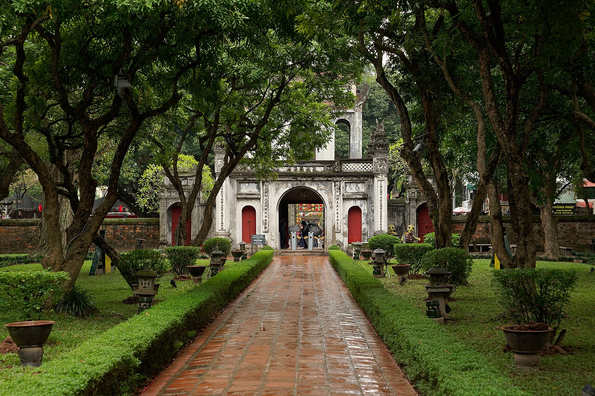

VIETNAM TRAVEL · VĂN HOÁ GẦN HƠN
Mỗi vùng đất.
Một dấu ấn riêng.
Đi qua những miền di sản. Chạm vào nhịp sống bản địa. Tìm một hành trình, một món ăn và một nơi dừng chân dành cho bạn.
Mở VietNam TravelKhám phá điểm đến, tour, quán ăn và lưu trú trên VNT.
Một số tiện ích cần đăng nhập.

HÀ NỘI · DI SẢN & ĐỜI SỐNGChạm vào một Việt Nam gần hơn.